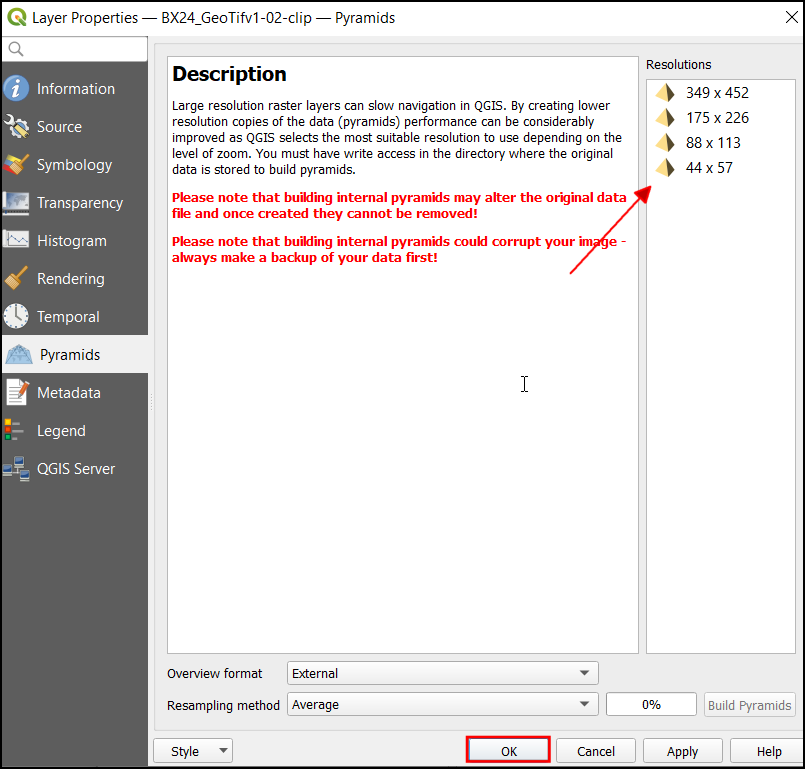
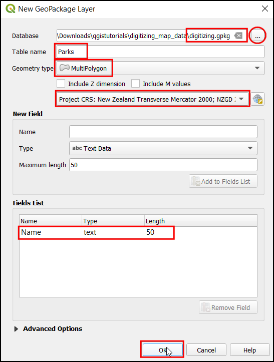

Digitalizar Datos del Mapa (QGIS3)¶
La digitalización es una de las tareas más comunes que tiene que hacer un especialista en SIG. A menudo, una gran cantidad de tiempo SIG se dedica a digitalizar datos ráster para crear capas vectoriales que se utilizan en el análisis. QGIS tiene poderosas capacidades de digitalización y edición en pantalla que exploraremos en este tutorial.
Vista general de la tarea¶
Usaremos un mapa topográfico ráster y crearemos varias capas ráster que representan entidades alrededor de un parque.
Otras competencias que aprenderá¶
Construir pirámides para grandes conjuntos de datos ráster para acelerar las operaciones de acercamiento y desplazamiento.
Crear y editar GeoPackage.
Consigue la información¶
Land Information New Zealand (LINZ) provee mapas topográficos ráster a escala 1:50.000 para la masa de tierra principal de Nueva Zelanda y las Islas Chatham.
Descargue el Archivo de Imagen geoTIFF de la página de descarga del mapa Christchurch Topo50.
Para su comodidad, puede descargar directamente una copia del conjunto de datos del siguiente enlace:
Fuente de Datos [LINZ]
Procedimiento¶
En QGIS, vamos a cargar el archivo de imagen. Vaya a .

En el cuadro de diálogo Administrador de fuentes de datos seleccione Ráster. En Fuente haga clic en el botón
...y localice el archivo descargadoBX24_GeoTifv1-02.tify haga clic en Abrir. Luego haga clic en Añadir seguido de Cerrar.

Se trata de un archivo ráster de gran tamaño, y es posible que notes que cuando haces zoom o te desplazas por el mapa, éste tarda un poco en renderizar la imagen. QGIS ofrece una solución sencilla para hacer que los rásteres se carguen mucho más rápido utilizando Pirámides de imágenes. QGIS crea mosaicos pre-renderizados a diferentes resoluciones, y estos se presentan en lugar de la trama completa. Esto hace que la navegación por el mapa sea más rápida y receptiva. Haga clic con el botón derecho del ratón en la capa
BX24_GeoTifv1-02y seleccione Propiedades`.

En el cuadro de diálogo Propiedades de la capa, elija la pestaña Pirámides. Mantenga la tecla Ctrl y seleccione todas las resoluciones ofrecidas en el panel Resoluciones. Deje las demás opciones por defecto y haga clic en Construir pirámides.

Una vez finalizado el proceso, el cuadro de diálogo mostrará las pirámides sin una cruz. Esto indica que la construcción de las pirámides de imágenes ha finalizado. Haga clic en Aceptar.

Antes de comenzar, necesitamos establecer las Opciones de Digitalización predeterminadas. Vaya a .

Seleccione la pestaña Digitalización en el diálogo Opciones. Marque la opción Activar el ajuste por defecto en la sección Ajuste. En Modo de ajuste por defecto elija Vértice. Esto le permitirá ajustarse al vértice más cercano. También prefiero establecer la Tolerancia de ajuste por defecto y la Radio de búsqueda para ediciones de vértices en píxeles en lugar de unidades de mapa. Esto asegurará que la distancia de ajuste se mantenga constante independientemente del nivel de zoom. Dependiendo de la resolución de la pantalla de su ordenador, puede elegir un valor apropiado. Haga clic en Aceptar.

Ahora estamos listos para empezar a digitalizar. Primero crearemos una capa de carreteras y digitalizaremos las carreteras alrededor del área del parque. Haga clic en el icono de los Paneles. Un GeoPackage es un formato de datos abierto, no propietario, independiente de la plataforma y basado en estándares para un sistema de información geográfica implementado como un contenedor de base de datos SQLite. Esto hace que sea mucho más fácil moverlo en lugar de un montón de shapefiles. En este tutorial, creamos un par de capas de polígonos y una capa de líneas para que un GeoPackage sea más adecuado. Siempre puede cargar un GeoPackage y exportar las capas como un archivo shape o cualquier otro formato que desee.

En el cuadro de diálogo Nueva capa GeoPackage, haga clic en el botón … y guarde una nueva base de datos GeoPackage con el nombre
digitizing.gpkg. Elija el Nombre de la tabla comoCaminosy seleccioneCadena de líneascomo Tipo de geometría`. El mapa topográfico base es el SRCEPSG:2193 - NZGD 2000.

Cuando se crea una capa del SIG, hay que decidir los atributos de cada objeto espacial. Dado que se trata de una capa de caminos, tendremos adicionalmente dos atributos primarios: Nombre y Clase. En Nuevo campo Introduzca
Nombredel tipo Datos de texto, con50como Longitud máxima y haga clic en Añadir a la lista de atributos. Haga clic en Aceptar.

Una vez que la capa
Roadsesté cargada, clic el botón guilabel:Conmutar edición para poner a la capa en modo edición.

Clic el botón Añadir Objeto espacial Línea. Clic en el lienzo del mapa para agregar un nuevo vértice. Agregue nuevos vértices a lo largo del objeto espacial camino. Una vez que haya digitalizado un segmento de camino, clic-derecho para terminar el objeto espacial.

Nota
Puede usar la rueda del ratón para acercarse o alejarse cuando digitaliza. También puede mantener presionado el botón de deslizamiento y mover el ratón para desplazarse.
Después de hacer clic con el botón derecho del ratón para finalizar el elemento, aparecerá un cuadro de diálogo emergente llamado Camino - Atributos del elemento. Aquí puede introducir los atributos de la característica recién creada. No introduzca ningún valor para fid ya que es un identificador secuencial que se generará automáticamente. Introduzca el nombre de la carretera tal y como aparece en el mapa topográfico. Opcionalmente, asigne también un valor de Clase de camino. Haga clic en Aceptar.

El estilo predeterminado de la nueva capa de líneas es una línea fina. Vamos a cambiarlo para ver mejor los rasgos digitalizados en el lienzo. Seleccione la capa
Caminosy haga clic en Panel de estilo de la capa.

En el Panel de Estilos de Capa, busque los diferentes estilos de capa road. Seleccione
topo road. Haga clic en Aceptar.

Ahora la capa de camino será claramente visible. Si está satisfecho con el trabajo, haga clic en el botón Guardar ediciones de capas para guardar los cambios.

Antes de digitalizar el resto de los caminos, es esencial actualizar algunos otros ajustes de ajuste importantes para crear una capa sin errores. Haga clic con el botón derecho del ratón en cualquier espacio del área de la barra de herramientas y active la :guilabel:`Barra de herramientas de ajuste.

Ahora aparecerá en el panel una Habilita autoajuste (Icono del imán). Haga clic en él para activarlo y seleccione Todas las capas y elija
Abrir opciones de ajuste....

En el cuadro de diálogo Opciones de autoajuste, haga clic en la opción Autoajuste en intersección, que le permite encajar en una intersección de una capa de fondo.

Ahora puede hacer clic en el botón Añadir objeto espacial y digitalizar otros caminos alrededor del parque. Asegúrese de hacer clic en Guardar ediciones después de añadir una nueva característica para guardar su trabajo. Una herramienta útil para ayudarle a digitalizar es la Herramienta Vértice. Haga clic en el botón Herramienta Vértice y seleccione Herramienta Vértice (Capa actual).

Una vez activada la herramienta de nodos, haga clic en cualquier objeto espacial para mostrar los vértices. Haga clic en cualquier vértice para seleccionarlo. El vértice cambiará de color una vez seleccionado. Ahora puedes hacer clic y arrastrar el ratón para mover el vértice. Esto es útil cuando se quiere hacer ajustes después de la creación del objeto espacial. También puede eliminar un vértice seleccionado haciendo clic en la tecla Borrar. (Opción+Borrar en una mac)

Una vez que haya terminado de digitalizar todos los caminos, clic el botón Conmutar Edición. Clic Guardar

Ahora crearemos otra capa para digitalizar los parques como polígonos. Haga clic en el icono de Paneles. En el cuadro de diálogo Nueva capa de GeoPackage, haga clic en el botón … y seleccione la base de datos de GeoPackage llamada
digitalización.gpkg. Nombra la nueva capa como un atributo llamadoParks. SeleccioneMultiPolígonocomo Tipo`. El mapa topográfico base es elEPSG:2193 - NZGD 2000CRS. Haga clic en Aceptar. En Nuevo campo IntroduzcaNombre, y el tipo como Datos de texto, con50como Longitud máxima y haga clic en Añadir a la lista de campos. Haga clic en Aceptar.

Nota
Polígono vs. Multipolígono
Polígono - Superficie plana definida por 1 límite exterior y 0 o más límites interiores. Cada límite interior define un agujero en el polígono.
Polígono múltiple - Se utiliza para representar áreas con agujeros en su interior o que consisten en múltiples áreas disjuntas. Por ejemplo, 3 polígonos discontinuos pueden ser dibujados y agrupados como un solo objeto espacial.
Aparecerá un diálogo emergente. Seleccione el botón Añadir nueva capa.

Ahora seleccione la capa
Parquesy haga clic en el botón Commutar edición y haga clic en el botón Añadir objeto espacial y haga clic en el lienzo del mapa para añadir un vértice de polígono. Digitalice el polígono que representa el parque. Asegúrese de que se ajusta a los vértices del camino para que no haya huecos entre los polígonos del parque y las líneas de la carretera. Haga clic con el botón derecho del ratón para terminar el polígono.

Ingrese el nombre del parque en la ventana emergente Parks - Atributos de Objeto Espacial.

Ahora digitalice la región superior del parque. Introduce el nombre del parque y guarda los cambios.

Ahora, antes de digitalizar el polígono interior vamos a establecer los ajustes que pueden facilitar este trabajo. Las capas multipoligonales ofrecen otro ajuste útil llamado Evitar intersecciones de nuevos polígonos. Seleccione Habilitar autoajuste (Icono del imán), haga clic en él para activarlo, y haga clic en Todas las capa y seleccione
Configuración avanzada.

Haga clic en el botón
Evitar la superposición en las capas activasde la barra de herramientas de ajuste.

Ahora en Editar configuración avanzada, seleccione la Unidades como
píxeles.

Marque la casilla de la columna Evitar solapamiento en la fila de la capa
Parks.

Clic en Añadir objeto espacial para añadir un polígono. Con el Evitar Sobreposición, será capaz de digitalizar rápidamente un nuevo polígono sin preocuparse de ajustar exáctamente a los polígonos vecinos.

Haga clic con el botón derecho para terminar el polígono e introduzca los atributos. Mágicamente el nuevo polígono se encoge y se ajusta exactamente a los límites de los polígonos vecinos. Esto es muy útil cuando se digitalizan límites complejos en los que no es necesario ser preciso y seguir teniendo un polígono topológicamente correcto. Haga clic en Commutar edición para terminar de editar la capa
Parks.

Ahora es el momento de digitalizar una capa de edificios. Cree una nueva capa poligonal llamada
Buildingshaciendo clic en el icono de los Paneles. Establezca las etiquetas Buildings y MuiltiPolygon. Elija el SRC comoEPSG:2193 - NZGD 2000. Haga clic en Aceptar.

Una vez añadida la capa «Buildings», desactive las capas «Parks» y «Roads» para hacer visible el mapa topográfico base. Seleccione la capa
Buildingsy haga clic en Activar edición.

La digitalización de edificios puede ser una tarea engorrosa, y además, es un reto añadir vértices manualmente para que las aristas sean perpendiculares y formen un rectángulo. Utilizaremos una barra de herramientas de QGIS llamada Digitalización de formas para ayudar en esta tarea. Haz clic con el botón derecho del ratón en cualquier espacio vacío del área de la barra de herramientas y activa la barra de herramientas de digitalización de formas.

Active la edición pulsando el icono del lápiz Commutar edición.

Ahora bajo el desplegable Añadir rectángulo seleccione el botón Añadir rectángulo a partir de extensión.

Acérquese a una zona con los edificios. Haz clic y arrastra el ratón para dibujar un rectángulo perfecto. Del mismo modo, añada los edificios restantes.

Observará que algunos edificios no son verticales, y tendremos que dibujar un rectángulo en ángulo para que coincida con la huella del edificio. En el menú desplegable Añadir rectángulo seleccione el botón Añadir rectángulo a partir del centro y un punto.

Acérquese a una zona de edificios con forma de diamante. Haz clic en el centro para soltar un punto y arrastra el ratón para dibujar un rectángulo.

Necesitamos rotar este rectángulo para hacer coincidir con la imagen en el mapa topo. La herramienta rotar está disponible en la barra de herramientas Digitalización avanzada. Clic-derecho en un área vacía en la sección barra de herramientas y habilite la barra de herramientas Edición avanzada.

Haga clic en el botón Rotar objeto espacial.

Utilice la herramienta Seleccionar objeto espacial único para seleccionar el polígono que desea rotar. Una vez activada la herramienta Rotar objeto espacial, verá unas cruces en el centro del polígono. Haga clic exactamente en esa cruz y arrastre el ratón mientras mantiene pulsado el botón izquierdo del ratón. Aparecerá una vista previa del objeto espacial rotado. Suelte el botón del ratón cuando el polígono se alinee con la huella del edificio.

Guarde las ediciones de las capas y haga clic en Editar una vez que haya terminado de digitalizar todos los edificios. Puede arrastrar las capas para cambiar su orden de aparición. La tarea de digitalización ha finalizado. Puede jugar con las opciones de estilo y etiquetado en las propiedades de las capas para crear un mapa de aspecto agradable a partir de los datos creados.

If you want to give feedback or share your experience with this tutorial, please comment below. (requires GitHub account)